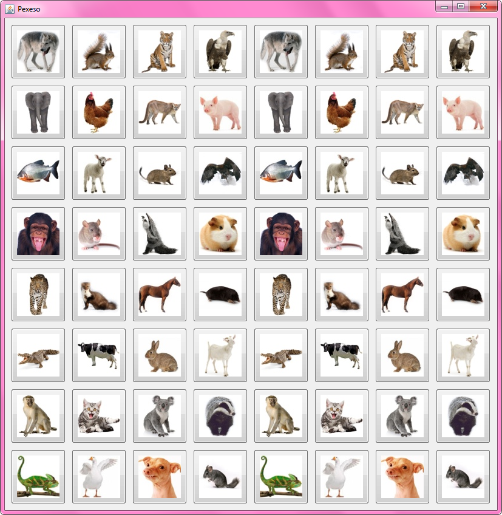

Lekce 09
Nejprve trocha teorie.
Na okno jsem si vložil 4 JLabely pro výpis výsledků a tlačítko pro vyvolání akce. Napsal jsem třídu Datum:
public class Datum {
Integer den;
Integer mesic;
Integer rok;
}
Nyní jsem napsal program:
Datum dnes; dnes = new Datum(); dnes.den = 28; dnes.mesic = 4; dnes.rok = 2016; String text1 = "Dnes je " + dnes.den + "." + dnes.mesic + "." + dnes.rok; label1.setText(text1); Datum zitra; zitra = new Datum(); zitra.den = 29; zitra.mesic = 4; zitra.rok = 2016; String text2 = "Zitra je " + zitra.den + "." + zitra.mesic + "." + zitra.rok; label2.setText(text2); Datum dalsiDen = zitra; String text3 = "Dalsi den je " + dalsiDen.den + "." + dalsiDen.mesic + "." + dalsiDen.rok; label3.setText(text3); dalsiDen.den = 30; String text4 = "Zitra je " + zitra.den + "." + zitra.mesic + "." + zitra.rok; label4.setText(text4);
Co bude v label1?
28.4.2016
Co bude v label2?
29.4.2016
To bylo jednoduché.
Zajímavější je ale otázka, co bude v label3 a kolik objektů typu Datum existuje v paměti počítače. Je nutné si uvědomit, že objekty samy se nekopírují. Proměnné udržují jen jejich identitu.
V label3 tedy bude 28.4.2016 a objekty typu Datum jsou pořád jen 2, protože za dobu běhu programu byl proveden příkaz new Datum() jen 2x.
Nejzajímavější otázka je, co bude vypsáno v label4.
Když 2 proměnné ukazují na 1 objekt, změny provedené přes 1 proměnnou budou samozřejmě vidět i přes druhou proměnnou. Měníme proměnnou zítra, ale vypisujeme objekt v proměnné dnes. Otázka vlastně je, zda jde o stejný objekt.
V label4 tedy bude uvedeno 30.4.2016, protože jde o stejný objekt.
V další části teorie jsme zkoušeli řetězit vyhodnocování odkazů a pracovali jsme s třídou Clovek:
public class Clovek {
String jmeno;
Clovek partner;
}
A programem, který ji používal.
Clovek tatka = new Clovek(); Clovek mamka = new Clovek(); tatka.jmeno = "Josef"; mamka.jmeno = "Josefína"; tatka.partner = mamka; mamka.partner = tatka; label1.setText(tatka.jmeno); label2.setText(mamka.jmeno); label3.setText(tatka.partner.jmeno); label4.setText(tatka.partner.partner.partner.partner.jmeno);
Proměnné vždycky nesou pouze identitu objektu (neboli odkaz na objekt). Není tedy problém, že třída Člověk se skládá ze dvou vnitřních proměnných - jednoho odkazu na objekt typu String a jednoho odkazu na objekt typu Člověk.
Zároveň je také zajímavé odpovědět na otázky, co bude vyplněno v label1 až label4.
Následovala praktická část.
V ní jsme začali pracovat na Pexesu.
Pexeso je složitá hra, budeme tedy nejprve řešit různé předpřipravené dílčí problémy.
Prvním problémem je vůbec rozestavět kartičky na okno.

Kdyby dané kartičky byly 2, 3 nebo třeba 4, položily bychom je ručně pomocí designéru. Protože je jich ale 8x8 (tedy 64), je velmi vhodné kartičky rozmístit pomocí cyklu. Raději možná pomocí dvou vnořených cyklů 'for'. Zatím neřešme, jak si udržovat odkaz na kartičky, pouze se je pokusme vložit na správné pozice na okno. Kartička je reprezentována vizuální komponentou typu JButton o velikosti 90x90. Sám obrázek je velký 70x70.
To bylo pro tento týden všechno. Příští týden budeme řešit další dílčí problémy Pexesa. Například udržování odkazů na kartičky, míchání kartiček a otáčení kartiček rubem nebo lícem nahoru.
Materiály z lekce
Materiály jsou ke stažení zde: lekce09.7z
Archív si stáhněte, například na plochu. Celý jej rozbalte přímo do C:\
Archív totiž už obsahuje složku
Java-Training a materiály se tím pádem vloží na to správné místo do
C:\Java-Training\Projects\Lekce09.